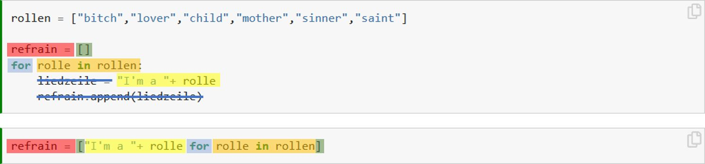

Aufgabe 11: for loops Advanced¶
Theorie¶
In diesem Kapitel kommen noch zwei Aspekte von for loops, die als „Advanced“ eingestuft werden können aber in der Praxis sehr nützlich sind. Dabei geht es einerseits um verschachtelte for loops und zum andere um eine verkürzte Schreibweise von for loops.
Verschachtelte for loops¶
Wir können verschiedene for loops auch ineinander verschachteln (englisch: nested loops). Das ist vor allem dann nützlich, wenn alle Kombinationen aus zwei Datensätzen miteinander verrechnet werden müssen. Angenommen du willst die drei Mitglieder deiner Band (bestehend aus Il Buono, Il Brutto, Il Cattivo) deinen Eltern vorstellen und auch umgekehrt deine Eltern deiner Band vorstellen. Für so was eignen sich zwei verschachtelte for Loops hervorragend:
Tipp
Als Platzhaltervariabel nutze ich wenn immer möglich das Singulär und für den Iterator das Plural von dem Objekt, über das ich iteriere. for bandmitglied in band, for vogel in voegel usw, dies hilft mir den Überblick im loop zu bewahren.
eltern = ["Papa", "Mama"]
band = ["Il Buono", "Il Brutto", "Il Cattivo"]
for bandmitglied in band:
for elternteil in eltern:
print(elternteil, "das ist",bandmitglied)
print(bandmitglied, "das ist",elternteil)
print("---")
Papa das ist Il Buono
Il Buono das ist Papa
---
Mama das ist Il Buono
Il Buono das ist Mama
---
Papa das ist Il Brutto
Il Brutto das ist Papa
---
Mama das ist Il Brutto
Il Brutto das ist Mama
---
Papa das ist Il Cattivo
Il Cattivo das ist Papa
---
Mama das ist Il Cattivo
Il Cattivo das ist Mama
---
Ein weiteres fakultatives Beispiel
Ein anderes Beispiel: Der Abschluss vom Lied „Bitch“ (Meredith Brooks) geht folgendermassen:
Uuhh, uuhh, uuhh
Uuhh, uuhh, uuhh
Uuhh, uuhh, uuhh
Uuhh, uuhh, uuhh
Das sind also 3 Uuhh’s pro Zeile, und dies 4 mal wiederholt. Um dies in einem verschachtelten for loop abzubilden müssen wir etwas kreativ sein.
for i in range(4): # dieser äussere Loop ist verantwortlich für die 4 Zeilen
zeile = []
for j in range(3): # dieser innere Loop ist verantwortlich für die 3 Wörter
zeile.append("Uuhh")
print(zeile)
['Uuhh', 'Uuhh', 'Uuhh']
['Uuhh', 'Uuhh', 'Uuhh']
['Uuhh', 'Uuhh', 'Uuhh']
['Uuhh', 'Uuhh', 'Uuhh']
Verkürzte Schreibweise¶
Es ist äusserst häufig der Fall, dass wir den Output aus einem Loop in einer Liste abspeichern wollen. Wie das geht haben wir ja bereits in Aufgabe 10: for loop Basics gelernt:
rollen = ["bitch","lover","child","mother","sinner","saint"]
refrain = []
for rolle in rollen:
liedzeile = "I'm a "+ rolle
refrain.append(liedzeile)
Nur ist das ein bisschen umständlich, weil wir dafür viele Zeilen Code brauchen, um etwas eigentlich ganz simples zu bewerkstelligen. Es gibt deshalb dafür auch eine verkürzte Schreibweise, welche ich in der letzten Woche bereits einmal verwendet habe (siehe Übung 7.6). Der obige Loop hat in der verkürzten Schreibweise die folgende Form:
refrain = ["I'm a "+ rolle for rolle in rollen]
Diese verkürzte Schreibweise heisst in Python list comprehension und sie ist äusserst praktisch, wenn man sie beherrscht. Das Beherrschen ist aber nicht zentral, es reicht schon wenn ihr eine solche Schreibweise wieder erkennt und richtig interpretieren könnt (im Sinne von „Aha, hier wird also in einem Loop eine Liste erstellt“). In der folgenden Darstellung seht ihr farblich, welche Elemente sich in der verkürzten Schreibweise wo wiederfinden und welche Elemente gar nicht wiederverwendet werden.

Übungen¶
Übung 11.1¶
Erstelle zwei Listen bestehend aus 3 Hundenamen (hunde) und 3 Katzennamen (katzen). Erstelle einen verschachtelten For Loop, wo jeder Hund jede Katze anbellt und jede Katze jeden Hund anfaucht.
Bruno bellt Greta an
Greta faucht Bruno an
Berta bellt Greta an
....
Übung 11.2 (fakultativ, für Fortgeschrittene!)¶
Versuche die Monte Carlo Simulation für die Annäherung an Pi (aus der ersten Übung „Datenqualität und Unsicherheit) mit einer Funktion und einem For Loop zu lösen.
Zur Erinnerung, die Vorgehensweise für die Annäherung an Pi geht folgendermassen:
Zufallskoordinaten (
x,y) zwischen 0 und 1 erstellenDistanz zum Ursprung (0) mit der Formel \(\sqrt(x^2+y^2)\) berechnen
Bestimmen ob sich der Punkt innerhalb des Kreisviertels befindet (\(d < 1\))
Schritte 1 & 2 mehrfach wiederholen
Anteil der Punkte innerhalb des Kreisviertels mit 4 Multiplizieren
Tipps:
Für die Erstellung der Zufallspunkte brauchst du die Funktion
random()aus dem modulrandomSchritte 1 - 3 werden am sinnvollsten ein eine Funktion verpakt, welche keine Argumente benötigt
Schritt 4 löst du am besten mit einer
For loopmitrange(100)(für 100 Wiederholungen)
# Musterlösung
import random
def get_pi():
x = random.random()
y = random.random()
pythagoras = (x**2+y**2)**0.5
return(pythagoras>1)
get_pi()
res = [get_pi() for x in range(1000000)]
(len(res)-sum(res))/len(res)*4
3.141216